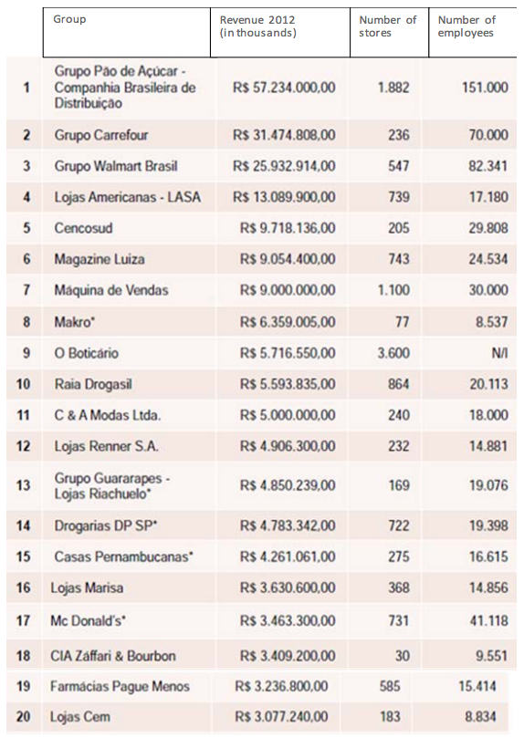

The importance of retail in Brazil is increasingly acknowledged for its role in fueling the Brazilian economic engine. Besides generating the greatest number of formal jobs, since 2010 the retail sector has marked significant growth with consistent indicators of modernization, even during the financial crisis of 2008-09. Since 2004, Brazil’s retail sector has grown by 106%, outpacing the 44% growth rate of the country’s GDP during the same period.
In 2013, Brazil’s domestic retail market was estimated to be worth about $230 billion. Besides the country’s 40% growth in GDP per capita during the last eight years, distribution of population in urban areas also plays a vital role in encouraging the growth of retail sectors. About 30% of the country’s 201 million citizens lives in 10 principal metropolitan cities, led by greater São Paulo with a population of 18 million and Rio de Janeiro with some 10 million inhabitants.
Competitiveness, diverse industrial sectors in the economy, and the growing middle-class consumer population are all factors in such a profound increase in the Brazilian retail market, which was responsible for the creation of 3.7 million formal jobs over the past 10 years. Despite this outsized growth rate, the share of retail as a percentage of the nation’s GDP is still just 26 %. Therefore, there is still much room to grow.
In 2013, the retail sector rate of growth decelerated to just 4.3%, according to data released by the Brazilian Institute of Geography and Statistics (IBGE). This was the worst annual growth since 2003, during which sector sales decreased by 3.7%.The results of 2013 were half that of 2012, when sales volume grew 8.5%, led by an 8.5% increase from the supermarket sub-sector (“hypermarkets”). In 2013, hypermarket sales did grow, albeit at a much lower pace; driven by demand for articles for personal and domestic/household use.
Sectors
Among all retail segments analyzed by IBGE, the one with the greatest contribution to annual income for the sector was the "other articles of personal and domestic use" division. This catch-all category encompasses segments such as department stores, eyewear outlets, and specialty stores selling jewelry, sporting goods and toys. The increase in income derived from this segment was 10.3% over 2012 figures - the largest increase since 2008. Within this segment, department stores performed most notably.
The “pharmaceutical, medical, orthopedic and cosmetics” segment also contributed strong results in 2013, gaining 10.1% growth, the third highest impact (15%) registered among all retail sectors.
Retail revenue derived from gasoline filling stations, including those offering related automobile maintenance services increased 6.3% increase in 2013 over 2012; while retailers of furniture and white good appliances realized an increase of 5%.
Retail sales of textiles, apparel and footwear increased 3.5% - same as 2012 - and equipment and office supplies, computer and communication advanced 7.2%. The segment of books, newspapers, magazines and stationery was responsible for a minor contribution to the overall rate, registering growth of 2.6% over 2012.

Looking Ahead
Brazil expects major consolidation of existing retail leaders as well as entry of foreign brands, which will greatly alter the competitive landscape. In this scenario, the relevance and purpose of brand differentiation and its application in a consistent manner in the online shopping experience, and the multiple formats of physical stores, are the most important factors to be followed by retail brands, in order to ensure successful entry and expansion.
For more information about export opportunities in this sector, please contact Industry Specialist Luciana Escobar: luciana.escobar@trade.gov
Web Resources:
Institute for Retail Development
Brazilian Institute of Business Retail and Consumer Markets
Brazilian Institute of Geography and Statistics